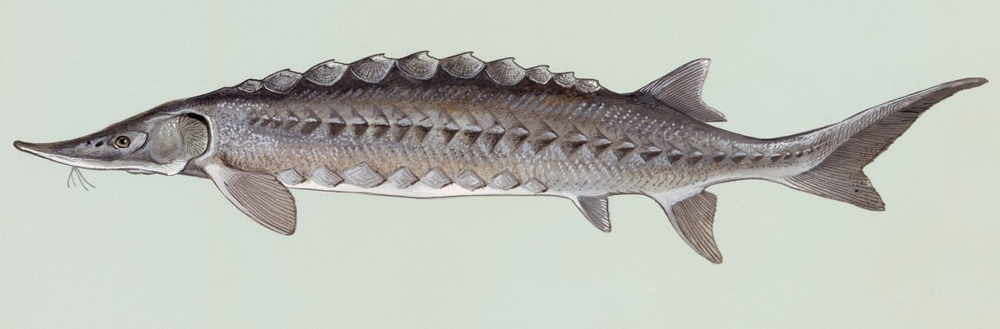

Biologia i rozpoznawanie
Wygląd i rozpoznawanie
Jesiotra rozpoznasz od pierwszego spojrzenia, bo nie przypomina żadnej innej ryby naszych wód. Ciało ma wydłużone, niemal wrzecionowate, zakończone charakterystycznie wysuniętym, ostrym pyskiem, od którego pochodzi nazwa gatunku. Zamiast łusek grzbiet i boki pokrywa pięć podłużnych rzędów kostnych tarczek zwanych pucklami — twardych, szorstkich płytek, które nadają rybie pancerny, prehistoryczny wygląd. Pod pyskiem znajdują się cztery długie wąsiki, a wysuwalne, bezzębne usta osadzone są na spodzie głowy, przystosowane do wysysania pokarmu z dna. Płetwa ogonowa jest heterocerkalna, o wydłużonym górnym płacie, co zdradza pokrewieństwo z rybami o szkielecie chrzęstnym. Ubarwienie bywa oliwkowobrązowe lub szarozielone na grzbiecie, jaśniejsze na bokach i niemal białe na brzuchu. Nawet niewielki, kilkudziesięciocentymetrowy osobnik jest nie do pomylenia z rodzimą rybą karpiowatą czy drapieżną.
Środowisko i występowanie w Polsce
Historycznie jesiotr ostronosy był rybą pospolitą w Bałtyku i wstępował na tarło do wielkich rzek zlewiska, w tym Wisły i Odry — jego ości znajdowano na średniowiecznych stanowiskach, a połowy stanowiły ważny element gospodarki nadmorskiej. Rabunkowa eksploatacja, regulacja rzek, budowa zapór i zanieczyszczenie wód doprowadziły jednak do całkowitego załamania populacji; ostatnie pewne okazy z polskich wód pochodzą sprzed dekad, a gatunek uznano za praktycznie wytępiony w naturze. Obecnie prowadzony jest program restytucji, w ramach którego do Bałtyku i dorzecza Wisły oraz Odry wypuszcza się materiał zarybieniowy z hodowli, odtwarzając wędrówki i tarliska. Dlatego każdy jesiotr napotkany dziś w wodach otwartych to najczęściej ryba z zarybień, kluczowa dla przetrwania gatunku, a nie pospolity mieszkaniec naszych rzek i przybrzeżnych łowisk.
Biologia i tarło
Jesiotr ostronosy to klasyczna ryba anadromiczna, czyli wędrowna: dorosłe osobniki żyją w słonych i słonawych wodach Bałtyku, a na tarło wstępują do rzek, wędrując pod prąd na dziesiątki i setki kilometrów. Jest przy tym gatunkiem długowiecznym i późno dojrzewającym — samice mogą przystępować do rozrodu dopiero po kilkunastu latach życia, a pojedyncze osobniki dożywają kilkudziesięciu lat i osiągają imponujące rozmiary. Ta powolna biologia sprawia, że populacja odbudowuje się bardzo trudno, bo utrata jednej dorosłej ryby oznacza stratę wielu przyszłych pokoleń. Tarło odbywa się wiosną i wczesnym latem w rzekach, na twardym, kamienisto-żwirowym dnie o wartkim nurcie, gdzie samice składają liczną, kleistą ikrę przyklejającą się do podłoża. Wylęgły narybek spływa stopniowo ku morzu, dorastając w strefie ujściowej. Szkielet jesiotra pozostaje w dużej mierze chrzęstny przez całe życie.
Żerowanie w sezonach
Jesiotr żeruje typowo przydennie, wykorzystując czułe wąsiki i dobrze rozwinięte płytki węchowe do wyszukiwania pokarmu w mule, piasku i żwirze. Wysuwalnymi, rurkowatymi ustami wysysa bezkręgowce denne — larwy owadów, skorupiaki, mięczaki i wieloszczety — a większe osobniki uzupełniają dietę drobnymi rybami. Jest to więc łagodny bentofag, a nie agresywny drapieżnik atakujący z zasadzki. W cieplejszej połowie roku, wiosną i latem, aktywność żerowa jest największa, bo wyższa temperatura wody przyspiesza metabolizm i sprzyja obfitości bezkręgowców w osadach. Jesienią tempo żerowania stopniowo maleje, a zimą, w zimnej wodzie, ryba znacznie ogranicza aktywność i przemieszcza się do głębszych, spokojniejszych partii. W kontekście restytucji sezonowe żerowanie ma znaczenie głównie biologiczne — dla wędkarza jest to informacja o trybie życia chronionego gatunku, a nie wskazówka do celowanego połowu w wodach publicznych, gdzie jesiotra i tak trzeba niezwłocznie wypuścić.
Przepisy, metody i taktyka
Przepisy krajowe i zasady lokalne
Przepisy krajowe: Jesiotr ostronosy: okres ochronny przez cały rok; nie traktuj tej karty jako wskazania celu połowu. Źródło: Dz.U. 2023 poz. 1373, § 6–7
Granica okresu ochronnego: jeżeli pierwszy lub ostatni dzień okresu przypada w dzień ustawowo wolny od pracy, okres skraca się o ten dzień (§ 7 ust. 2); wyjątkiem jest całoroczna ochrona jesiotra.
Przed połowem: sprawdź aktualny regulamin i zezwolenie dla konkretnej wody. Wymiar, okres, limit lub zakaz lokalny może być ostrzejszy; brak wartości krajowej nie oznacza zgody na zabranie ryby.
Metody i przynęty
Trzeba wyraźnie rozdzielić dwie rzeczy. Rodzimego jesiotra ostronosego w wodach publicznych nikt legalnie nie „łowi" — celowe nęcenie i połów gatunku chronionego jest niedopuszczalne, a przypadkowe zaczepienie kończy się wypuszczeniem. Kiedy wędkarze mówią o „łowieniu jesiotra", chodzi niemal zawsze o łowiska komercyjne i prywatne, gdzie hoduje się i zarybia gatunki jesiotrowate — najczęściej jesiotra syberyjskiego lub mieszańce — przeznaczone do amatorskiego połowu na zasadach ustalonych przez właściciela. Na takich obiektach sprawdzają się metody gruntowe: feeder i klasyczny grunt z ciężkim obciążeniem, przynęty zwierzęce i osadzone przy dnie pelety oraz specjalistyczne kulki tonące, dopasowane do przydennego, wysysającego sposobu żerowania ryby. Zawsze jednak stosuj się do regulaminu konkretnego łowiska, bo to on, a nie ogólne zasady PZW, określa dozwolone przynęty, zestawy i sposób obchodzenia się ze złowionymi rybami jesiotrowatymi.
Taktyka łowienia
Ponieważ w wodach otwartych jesiotr ostronosy podlega ochronie, praktyczna „taktyka" sprowadza się do właściwego postępowania w razie przypadkowego kontaktu z rybą. Jeśli poczujesz na gruncie ciężki, powolny, walcowaty opór i podejrzewasz jesiotra, prowadź hol spokojnie, bez szarpania, a rybę utrzymuj w wodzie — nie wyciągaj jej na brzeg ani na suchą matę na dłużej niż to konieczne do uwolnienia haczyka. Przygotuj wcześniej rozłączkę do haczyków i mokre dłonie, unikaj dotykania skrzeli i oczu, a przy najmniejszej wątpliwości przetnij żyłkę tuż przy pysku, zamiast forsować rybę. Na łowiskach komercyjnych, gdzie gatunki jesiotrowate są przeznaczone do połowu, taktyka opiera się na cierpliwym wystawieniu zestawów gruntowych w miejscach o spokojniejszym nurcie i twardszym dnie oraz na delikatnym holu — jesiotrowate są silne, lecz mają wrażliwe pyski. Zawsze respektuj limity i zasady wypuszczania obowiązujące na danym obiekcie.
Wartość kulinarna
Jesiotry od stuleci uchodziły za rybę luksusową, a ich mięso i ikra — kawior — były cenione na dworach i stołach zamożnych. Białe, jędrne, niemal pozbawione ości mięso jesiotrowatych ma delikatny, lekko orzechowy smak i dobrze znosi wędzenie, pieczenie oraz duszenie. Trzeba jednak podkreślić jasno: w polskich wodach otwartych rodzimego jesiotra ostronosego nie pozyskuje się do konsumpcji, bo jest gatunkiem chronionym i przedmiotem restytucji, więc jakiekolwiek kulinarne wykorzystanie takiej ryby jest wykluczone. Mięso i kawior, które trafiają legalnie na rynek, pochodzą wyłącznie z kontrolowanych hodowli akwakultury, gdzie gatunki jesiotrowate są rozmnażane i chowane komercyjnie. Jeśli więc interesuje Cię jesiotr na talerzu, sięgaj po produkty z pewnego, hodowlanego źródła z odpowiednim udokumentowaniem pochodzenia — nigdy po rybę „złowioną" w naturze. To rozróżnienie chroni zarówno gatunek, jak i Ciebie przed poważnymi konsekwencjami prawnymi.
Ciekawostki
Jesiotry należą do najstarszych ewolucyjnie ryb naszej półkuli — ich linia sięga dziesiątek milionów lat wstecz, dlatego bywają nazywane żywymi skamieniałościami. Zachowały wiele pierwotnych cech, jak w dużej mierze chrzęstny szkielet, kostne płytki zamiast łusek i heterocerkalną płetwę ogonową, spotykaną dziś głównie u rekinów. Płytki węchowe i wrażliwe wąsiki czynią z nich znakomite „wykrywacze" pokarmu ukrytego w osadach dennych. Rekordowe historyczne jesiotry bałtyckie osiągały ponoć kilka metrów długości i masę liczoną w setkach kilogramów, choć takich gigantów już nie spotkamy. Fascynujący jest też sam program restytucji: naukowcy odtwarzają populację, korzystając z materiału genetycznego blisko spokrewnionej populacji, wsiedlając młode ryby i śledząc ich wędrówki znacznikami. Każdy wypuszczony do Bałtyku osobnik to inwestycja w przyszłość gatunku, którą łatwo zniweczyć jednym nieodpowiedzialnym połowem.
FAQ — najczęstsze pytania
Czy wolno łowić jesiotra w polskich rzekach i Bałtyku?
Nie w sensie zwykłego wędkowania na zdobycz. Rodzimy jesiotr ostronosy jest w Polsce gatunkiem chronionym i przedmiotem programu restytucji, więc w wodach otwartych oraz przybrzeżnych nie wolno go celowo łowić ani zabierać. Jeśli ryba zaczepi się przypadkiem podczas połowu innych gatunków, masz obowiązek uwolnić ją jak najszybciej i najostrożniej, trzymając możliwie w wodzie. Celowe nęcenie i połów gatunku chronionego może wiązać się z poważnymi konsekwencjami prawnymi. Zasady bywają aktualizowane i różnią się między okręgami, dlatego przed wyjściem nad wodę sprawdź aktualne zezwolenie, regulamin okręgu PZW oraz komunikaty na pzw.org.pl.
Czym różni się jesiotr ostronosy od jesiotra syberyjskiego z łowiska?
To dwa różne gatunki jesiotrowatych o odmiennym statusie. Jesiotr ostronosy (Acipenser oxyrinchus), dawniej zwany zachodnim, to rodzima ryba wędrowna Bałtyku, dziś w Polsce chroniona i odtwarzana w ramach restytucji. Jesiotr syberyjski i pokrewne gatunki oraz mieszańce to natomiast ryby hodowlane, którymi zarybia się prywatne łowiska komercyjne przeznaczone do amatorskiego połowu. Kiedy wędkarze mówią o „łowieniu jesiotra", niemal zawsze mają na myśli właśnie te obiekty hodowlane, a nie dziką rybę z rzeki. Rozróżnienie jest kluczowe: na łowisku łowisz rybę użytkową zgodnie z jego regulaminem, a w wodach publicznych każdego jesiotra traktujesz jako gatunek chroniony i wypuszczasz.
Co zrobić, gdy przypadkiem złowię jesiotra w wodzie publicznej?
Zachowaj spokój i działaj szybko. Prowadź hol łagodnie, bez gwałtownych szarpnięć, i utrzymuj rybę w wodzie — nie kładź jej na brzegu ani suchej powierzchni na dłużej niż to absolutnie konieczne. Mokrymi dłońmi przytrzymaj rybę, unikając skrzeli i oczu, i delikatnie uwolnij haczyk rozłączką; jeśli haczyk jest głęboko, przetnij żyłkę tuż przy pysku, zamiast go forsować. Następnie pozwól rybie samodzielnie odpłynąć, ewentualnie przez chwilę przytrzymując ją w nurcie, aż odzyska równowagę. Warto zanotować miejsce i okoliczności oraz, jeśli to możliwe, zgłosić takie zdarzenie, bo dane o przypadkowych złowieniach są cenne dla programu restytucji gatunku.
Czy jesiotr wróci kiedyś do polskich wód na stałe?
Taki jest cel programu restytucji, choć to zadanie na dziesięciolecia. Jesiotr ostronosy jest gatunkiem długowiecznym i późno dojrzewającym — samice przystępują do tarła dopiero po kilkunastu latach — więc efekty zarybień w postaci naturalnie rozmnażającej się populacji będą widoczne bardzo powoli. Do sukcesu potrzeba nie tylko regularnego wsiedlania młodych ryb, lecz także drożnych rzek, zachowanych tarlisk o twardym, żwirowym dnie oraz czystej wody i, co równie ważne, odpowiedzialności wędkarzy, którzy nie zabierają przypadkowo złowionych osobników. Każdy wypuszczony jesiotr zbliża nas do momentu, w którym ryba ta znów będzie samodzielnie wstępować z Bałtyku do Wisły i Odry. To realna, ale wymagająca cierpliwości perspektywa.
Źródła i weryfikacja
Prawo: punktem wyjścia dla krajowych wymiarów i okresów ochronnych w powierzchniowych wodach śródlądowych jest § 6–7 rozporządzenia Dz.U. 2023 poz. 1373 (źródło zweryfikowano 2026-07-20). Przed połowem sprawdź zezwolenie, regulamin i komunikaty gospodarza tej wody; mogą wprowadzać dodatkowe, ostrzejsze warunki, lecz nie zastępują aktu. Praktyka redakcyjna: opis metod i taktyki ma charakter edukacyjny.
Tożsamość biologiczna i źródła
Nazwa łacińska: Acipenser oxyrinchus. Grupa atlasu: łososiowate i inne. Alias: jesiotr ostronosy.
Źródła: FishBase: Acipenser oxyrinchusGBIF: Acipenser oxyrinchus. Dostęp: 2026-07-17. Zakres: tożsamość taksonomiczna i nazewnictwo oraz, gdy wskazano, ocena ochrony; bez potwierdzenia lokalnego występowania, stanu łowiska ani zasad połowu.
Porównanie taksonomiczne
Porównaj z kartą Dorsz atlantycki. Obie karty prowadzą do osobnych rekordów źródłowych; porównanie nie jest kluczem oznaczania w terenie ani gwarancją wyniku połowu.